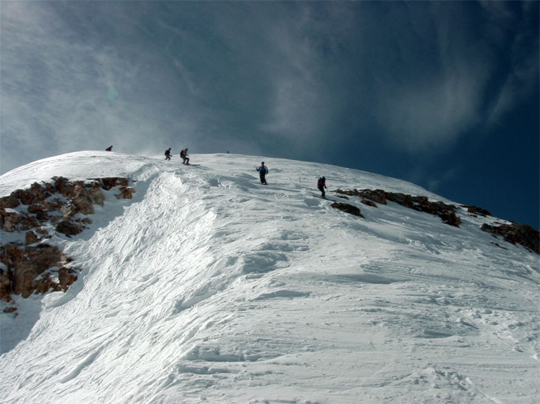

Rick took this shot from the entrance to Pipeline looking back up to the top of the West Twin. Pipeline drops off to the left here. Sideslipping down the apron from the peak to the entrance was a bit spooky, because the unseen dropoff to the right above is essentially a cliff.
Coming down the apron are, bottom to top, Joni, Dave Gibson, Wilma, Bev and a snowboarder. This first group entered the chute just as I arrived at the top of the West Twin; the head visible at the top of the peak above might be me.